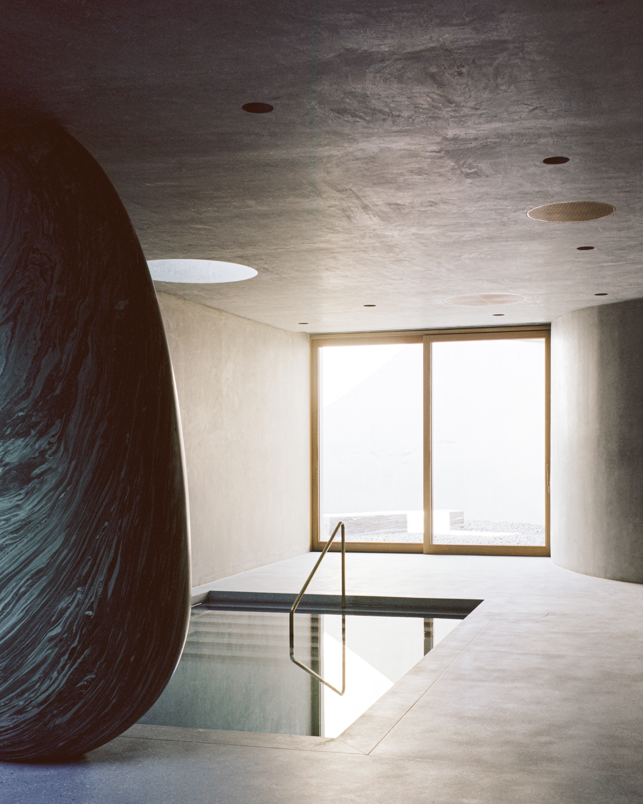
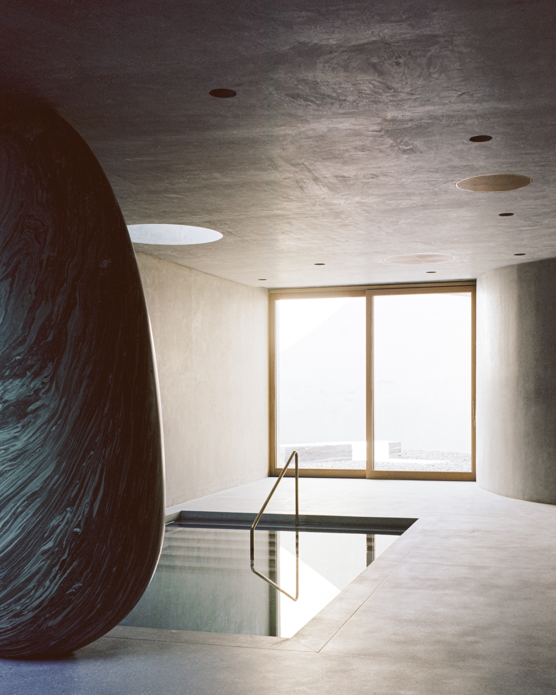

House of Horns
by WOJR
by WOJR
House of Horns is a minimalist residence located in Los Altos Hills, California, designed by WOJR. The design’s most radical gesture happens at the outset—re-burying the lower level into the hillside to restore the original topography. This act of reconciliation with the landscape establishes two distinct environments that work in counterpoint: an open, airy gathering space above, and a series of cave-like chambers below. The dining table at the heart of the upper level becomes the central node in this composition, surrounded by a ceiling of inverted elliptical vaults that reach toward carefully positioned skylights and clerestories.
What makes this project remarkable is how it negotiates between competing design impulses. There’s a modernist clarity in the open plan of the upper level, yet the Danby marble fireplace introduces a material richness that anchors the space with geological permanence. The Vermont stone creates a dialogue between East and West, connecting this California hillside to quarries across the continent.
The lower level’s bathing chamber, supported by an ovoid stone column, suggests ancient architectural precedents—Roman thermal baths or Moorish hammams—while maintaining a distinctly contemporary sensibility. These chambers selectively connect to sunken courtyards, creating moments of surprise as one moves between interior and exterior, between enclosure and prospect.
Perhaps most significant is how the architecture and landscape function as an integrated system. The meadow of low-water California native grasses, perennials and live oaks isn’t merely decorative but performs ecological work while extending the aesthetic experience outward. As seasons shift, as fog rolls in from the Bay, as light changes throughout the day, the house responds—capturing, framing, and translating these phenomena into lived experience.
 


Atelier Rampazzi
GIG

Anya Moryoussef Architect
Smoke Lake Cabin

Bureau Tempo, Thom Fougere
Pine Island Cottage